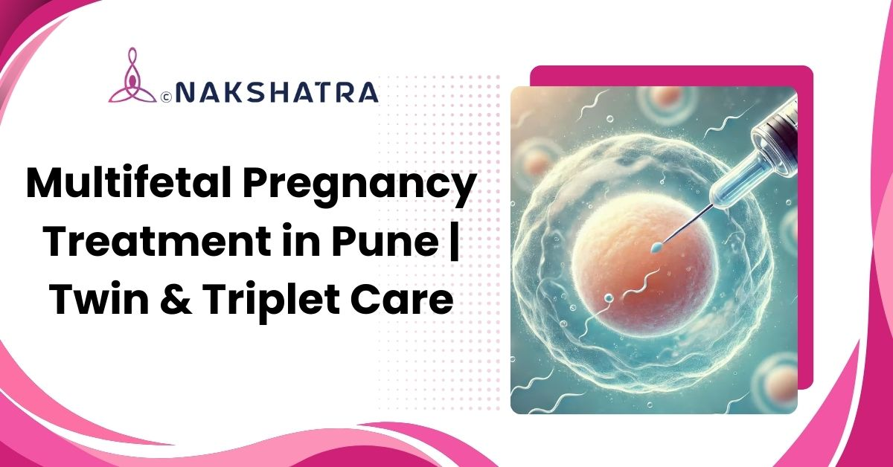

Frequent scans
Regular ultrasound and fetal checks help follow each baby's growth.
Specialized monitoring and antenatal planning for twins, triplets, or more, with careful attention to the health of the mother and each baby.

Regular ultrasound and fetal checks help follow each baby's growth.
Nutrition, rest, and symptom guidance are planned around higher pregnancy demands.
Birth timing and mode are discussed with neonatal care needs in mind.

Pregnancy is a special journey, but when a woman carries twins, triplets, or more, it becomes even more unique and delicate. Known as a multifetal pregnancy, this condition requires expert medical attention, as it involves higher health demands on both the mother and babies. Multifetal pregnancy care focuses on close monitoring, nutrition, rest, timely scans, and individualized delivery planning.
The original management points are arranged into readable cards for easier scanning on desktop and mobile.
High-protein, iron, calcium, and folate-rich diet plans to support healthy fetal development.
Regular monitoring helps detect preterm labor, diabetes, or growth issues early.
Encouraging rest and reduced physical strain, especially in later stages, to avoid early labor.
Tocolytics, cervical cerclage, and corticosteroids may be used to help prevent premature delivery when advised.
Safer cesarean or normal delivery plans with neonatal specialists for postnatal care.
Key care strengths from the original page remain visible without relying on cramped legacy columns.
Experienced care for pregnancies that need closer observation and individualized planning.
Ultrasound and fetal monitoring support early identification of growth or pregnancy concerns.
Diet and supplement guidance supports maternal strength and healthy fetal development.
Care is structured to watch for early labor signs and respond promptly when needed.
Urgent symptoms and delivery planning are coordinated with maternal and newborn safety in mind.
Rest, stress reduction, and practical pregnancy guidance support the complete care plan.
A multifetal pregnancy occurs when a woman carries more than one baby, such as twins, triplets, or quadruplets, at the same time. It usually happens naturally or due to fertility treatments. These pregnancies require specialised medical monitoring to ensure the safety and healthy development of both the mother and the babies.
Multifetal pregnancies are more common in women undergoing fertility treatments like IVF or those conceiving at an older age. Family history, maternal age, and hormonal factors also play a role. When multiple eggs are released and fertilised, or multiple embryos are implanted, a multifetal pregnancy can occur.
You can receive specialized care for multifetal pregnancies at top fertility and maternity clinics in Baner, Pune. These clinics offer advanced monitoring, personalized treatment plans, and round-the-clock medical support to ensure a safe pregnancy and delivery for both mother and babies.
A multifetal pregnancy is usually confirmed through an ultrasound in the early weeks of pregnancy. Additional blood tests like hCG and AFP levels can also indicate multiple babies. Advanced imaging helps your obstetrician monitor each baby's growth and development throughout your pregnancy journey.
Special care includes balanced nutrition, adequate rest, prenatal vitamins, regular ultrasounds, and avoiding stress or overexertion. Your doctor may recommend medications or lifestyle adjustments to prevent preterm labor and manage pregnancy-related conditions like hypertension or anemia.
Book a consultation at Nakshatra Clinic in Baner, Pune for multiple pregnancy monitoring, nutrition guidance, fetal assessment, and delivery planning.